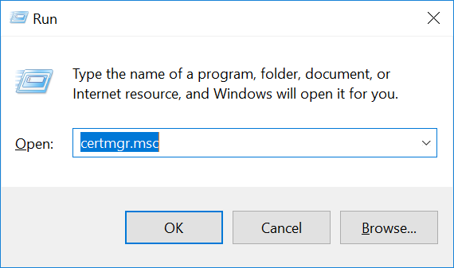

Setting up SSL
Setting up SSL on Windows
The steps to set up SSL on Windows are as follows.
First, create a certificate using powershell, and copy the thumbprint from the output
New-SelfSignedCertificate -DnsName eventstore.org, localhost -CertStoreLocation cert:\CurrentUser\My
To trust the new certificate, the certificate you have to import the certificate into the Trusted Root Certification Authorities:
- Press WindowsKey + R, and enter 'certmgr.msc'.

- Navigate to Certificates -> Current User -> Personal -> Certificates.
- Locate the certificate 'eventstore.org'.

- Right click on the certificate and click on All Tasks -> Export. Follow the prompts.

- Navigate to Certificates -> Current User -> Trusted Root Certification Authorities -> Certificates.
- Right click on the Certificates folder menu item and click All Tasks -> Import. Follow the prompts.
Start Event Store with the following configuration in a configuration file:
CertificateStoreLocation: CurrentUser
CertificateStoreName: My
CertificateThumbPrint: {Insert Thumb Print from Step 1}
CertificateSubjectName: CN=eventstore.org
ExtSecureTcpPort: 1115
Connect to Event Store:
var settings = ConnectionSettings.Create().UseSslConnection("eventstore.org", true);
using (var conn = EventStoreConnection.Create(settings, new IPEndPoint(IPAddress.Loopback, 1115)))
{
conn.ConnectAsync().Wait();
}
Setting up SSL on Linux
Note
This guide uses the latest Ubuntu LTS (18.04)
First, create a private key and self-signed certificate request (This is only for testing purposes)
openssl req \
-x509 -sha256 -nodes -days 365 -subj "/CN=eventstore.org" \
-newkey rsa:2048 -keyout eventstore.pem -out eventstore.csr
Export a p12 file from the certificate request. You use this when starting Event Store:
openssl pkcs12 -export -inkey eventstore.pem -in eventstore.csr -out eventstore.p12
You need to add the certificate to Ubuntu's trusted certificates. Copy the cert to the ca-certificates folder and update the certificates:
sudo cp eventstore.csr /usr/local/share/ca-certificates/eventstore.crt
sudo update-ca-certificates
The mono framework has its own separate certificate store which you need to sync with the changes you made to Ubuntu's certificates.
You first need to install mono-devel:
sudo apt-get install mono-devel
This process installs cert-sync, which you use to update mono's certificate store with the new certificate:
sudo cert-sync eventstore.csr
Start Event Store with the following configuration in a configuration file:
CertificateFile: eventstore.p12
ExtSecureTcpPort: 1115
Connect to Event Store: